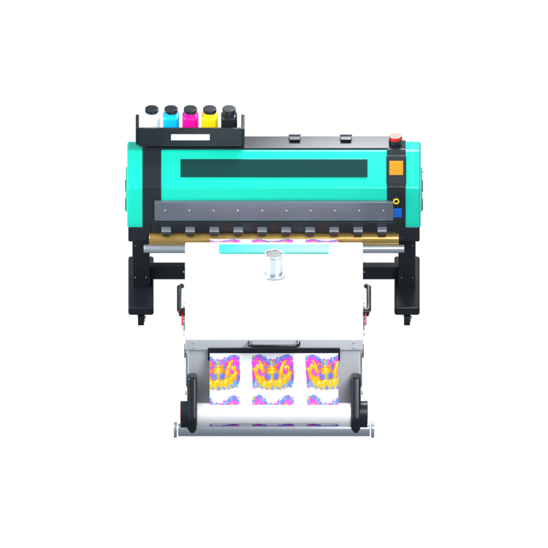
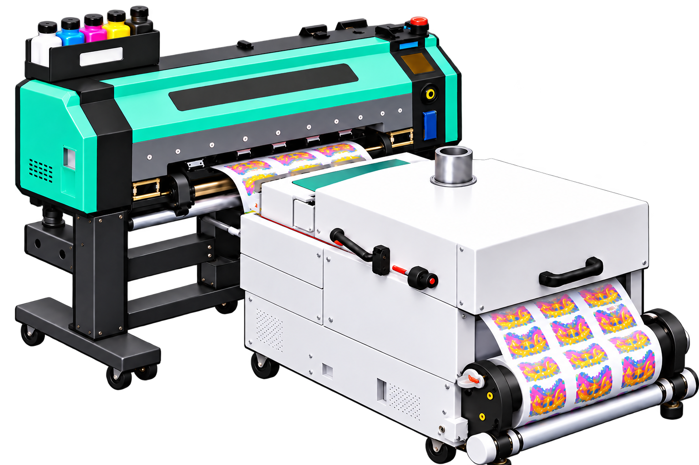

Measured turntable

16 unique renders900 × 900 RGBAGeometry locked
Your approved reference

This reconstruction uses your supplied views for the printer, narrower white shaker, controls, reservoirs, casters, and film path. The printed crown artwork comes from your supplied front view.
You approved this DTF reconstruction on October 16, 2026. It is the style benchmark for the remaining equipment. Game integration is still a separate step.